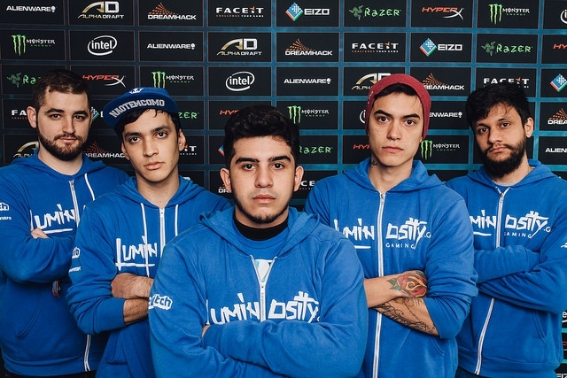
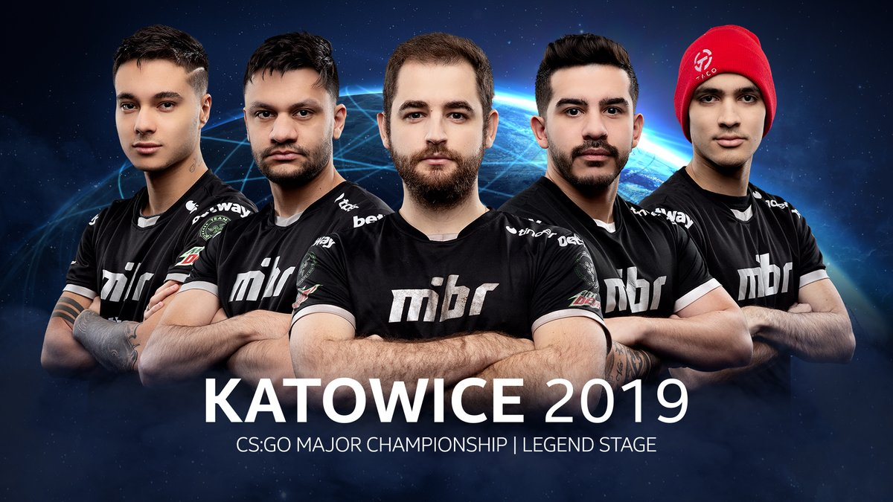
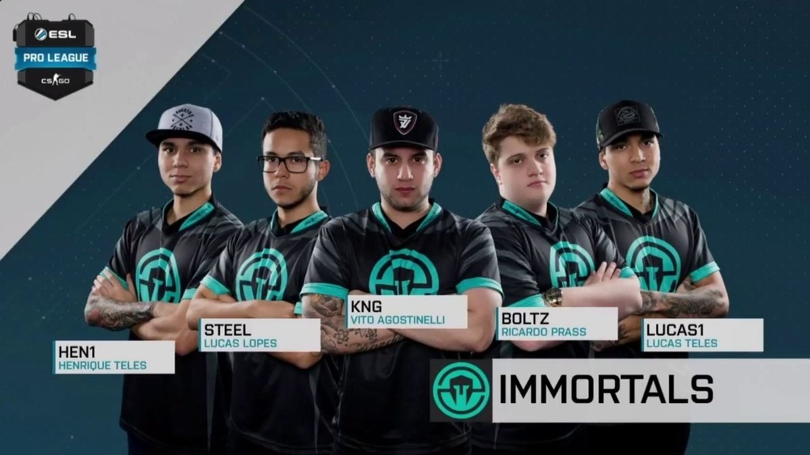
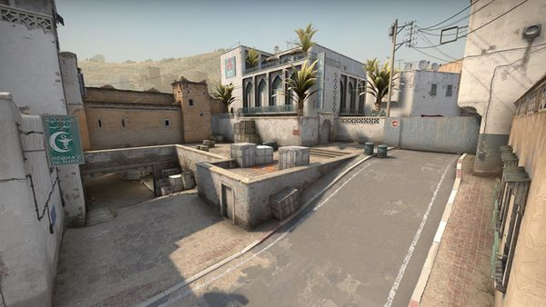

Videos
Times Brasileiros
  


Vertigo
A Dust2 é um dos sete mapas que fazem parte da atual campanha do Counter Strike: Global Offensive, junto ao Inferno, Mirage, Train, Nuke, Overpass e Vertigo, que substituiu Cache em atualização de março de 2019. O mapa é considerado o mais famoso da série Counter-Strike, e já teve ao todo cinco versões, duas delas no CS:GO e uma delas no CS 1.6. A nova Dust2 está no jogo desde outubro de 2017 e voltou ao competitivo no dia 20 de abril de 2018, quando passou a ocupar o lugar da cobblestone.
Como todo mapa competitivo, é de grande importância saber os nomes das principais posições em que os jogadores costumam ficar. Veja, a seguir, as principais call-outs da Dust2. Vale dizer que os nomes indicados não são oficiais da Valve, mas definições dadas pelos próprios jogadores. Portanto, os locais podem ser conhecidos por mais de um nome pela comunidade.
Dust 2
A Dust2 é um dos sete mapas que fazem parte da atual campanha do Counter Strike: Global Offensive, junto ao Inferno, Mirage, Train, Nuke, Overpass e Vertigo, que substituiu Cache em atualização de março de 2019. O mapa é considerado o mais famoso da série Counter-Strike, e já teve ao todo cinco versões, duas delas no CS:GO e uma delas no CS 1.6. A nova Dust2 está no jogo desde outubro de 2017 e voltou ao competitivo no dia 20 de abril de 2018, quando passou a ocupar o lugar da cobblestone.
Como todo mapa competitivo, é de grande importância saber os nomes das principais posições em que os jogadores costumam ficar. Veja, a seguir, as principais call-outs da Dust2. Vale dizer que os nomes indicados não são oficiais da Valve, mas definições dadas pelos próprios jogadores. Portanto, os locais podem ser conhecidos por mais de um nome pela comunidade.
Mirage

A Dust2 é um dos sete mapas que fazem parte da atual campanha do Counter Strike: Global Offensive, junto ao Inferno, Mirage, Train, Nuke, Overpass e Vertigo, que substituiu Cache em atualização de março de 2019. O mapa é considerado o mais famoso da série Counter-Strike, e já teve ao todo cinco versões, duas delas no CS:GO e uma delas no CS 1.6. A nova Dust2 está no jogo desde outubro de 2017 e voltou ao competitivo no dia 20 de abril de 2018, quando passou a ocupar o lugar da cobblestone.
Como todo mapa competitivo, é de grande importância saber os nomes das principais posições em que os jogadores costumam ficar. Veja, a seguir, as principais call-outs da Dust2. Vale dizer que os nomes indicados não são oficiais da Valve, mas definições dadas pelos próprios jogadores. Portanto, os locais podem ser conhecidos por mais de um nome pela comunidade.
Overpass

A Dust2 é um dos sete mapas que fazem parte da atual campanha do Counter Strike: Global Offensive, junto ao Inferno, Mirage, Train, Nuke, Overpass e Vertigo, que substituiu Cache em atualização de março de 2019. O mapa é considerado o mais famoso da série Counter-Strike, e já teve ao todo cinco versões, duas delas no CS:GO e uma delas no CS 1.6. A nova Dust2 está no jogo desde outubro de 2017 e voltou ao competitivo no dia 20 de abril de 2018, quando passou a ocupar o lugar da cobblestone.
Como todo mapa competitivo, é de grande importância saber os nomes das principais posições em que os jogadores costumam ficar. Veja, a seguir, as principais call-outs da Dust2. Vale dizer que os nomes indicados não são oficiais da Valve, mas definições dadas pelos próprios jogadores. Portanto, os locais podem ser conhecidos por mais de um nome pela comunidade.